Impulsando la innovación aeroespacial estudiantil en Chile hacia el infinito.
Explorar OperacionesUsach Space Program es una iniciativa estudiantil autogestionada que nace con el objetivo de ser el primer acercamiento extracurricular de los estudiantes hacia el sector aeroespacial, proyectándose como un espacio interdisciplinario y una incubadora de ideas.
Consolidarnos como el principal núcleo de colaboración interdisciplinaria de la USACH, posicionando el talento de nuestra universidad dentro de la industria aeroespacial nacional e internacional.
Impulsar el desarrollo científico-tecnológico en el ámbito aeroespacial dentro de la comunidad universitaria mediante la ejecución autogestionada de proyectos tangibles.
Nuestra estructura operativa está diseñada para abarcar desde la alfabetización técnica de nuevos estudiantes hasta el prototipado de hardware aeroespacial avanzado de nuestra directiva técnica.
Proyectos ágiles y accesibles diseñados para permeabilizar el conocimiento aeroespacial a estudiantes con o sin experiencia previa.
Misión de introducción a la aviónica y telemetría. Empaquetado de sensores y comunicación dentro del estándar de 10x10x10 cm.
Diseño y construcción de vehículos a escala para sortear obstáculos. Introducción práctica a la robótica y el diseño 3D.
Aplicación de las leyes de Newton, cálculo del centro de presión y gravedad mediante vehículos de introducción a presión.
Desafío de gestión de energía e impacto. Diseño de estructuras de sacrificio para proteger una carga útil durante una caída libre.
Nivelación técnica en modelado CAD paramétrico y manufactura aditiva, herramientas vitales para la organización.
Plataformas de experimentación y prototipado complejo desarrolladas por los miembros experimentados y la dirección técnica del equipo.
Vehículo de exploración de escala mayor y complejidad avanzada. Integra cinemática de suspensión Rocker-Bogie, telemetría de largo alcance, diseño mecatrónico robusto y visión computacional.
Desarrollo del hardware estandarte del programa. Un satélite de 3 unidades (10x10x30 cm) orientado a la prueba rigurosa de control de altitud, paneles de potencia y enlaces con estación terrena.
Nuestra estructura de crecimiento metodológico se divide en 5 dominios conceptuales coordinados.